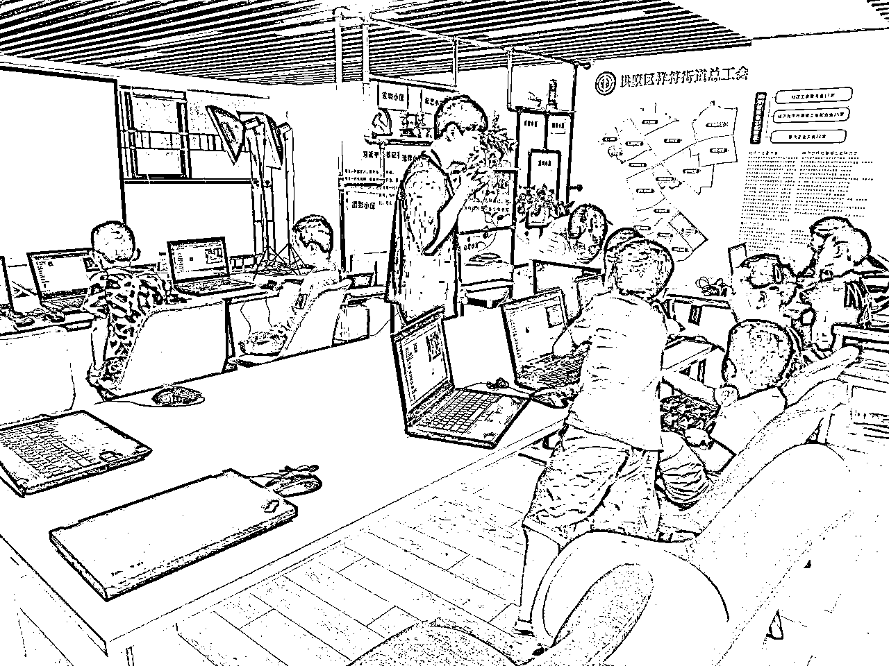
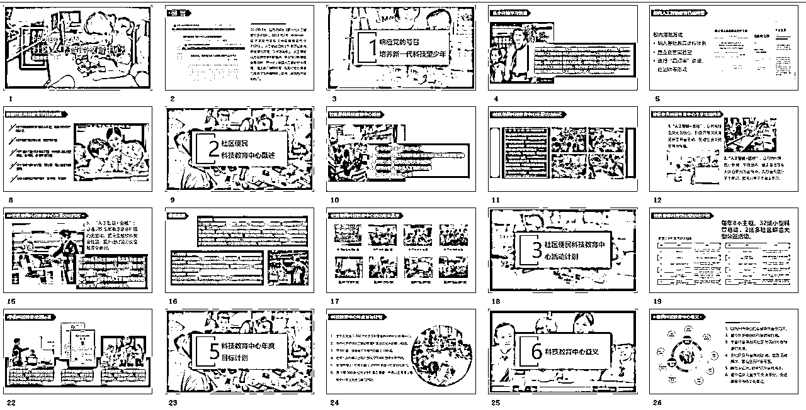

来源：https://qqdodsesuun.feishu.cn/docx/ByevdAjjzoHz8kxuMiBciT4Anjd
大家好，我是胖虎。
分享一下我大学期间做的一个项目经历——人工智能教育进社区。
希望这样的业务模式和思路对大家有所启发。越分享，越幸运。
充分利用线下社区的空闲场地，开展公益、普惠性质的少儿编程和人工智能课程。
单独这一句话比较难理解，具体怎么做，为什么这么做，下边一一来说。
我本科就读于杭州师范大学计算机师范专业，一般毕业后对口的工作，都是去学校里做信息技术老师。在我大二升大三的时候，看到了QQ空间有朋友在发给孩子上电脑课的照片，当时觉得自己可能之后就是去当老师，需要提前接触真实的孩子和课堂来磨练自己的上课技巧，于是联系了朋友去线下的少儿编程机构学习、当助教，最后成为带课老师开始上课。
少儿编程和人工智能教育方面这里就不过多介绍了，近几年还是比较火热的，我从老师的角度很认可这种教育理念，也明确知道能给孩子带来实质性的帮助，真正认可、愿意去做这样的事情。
兼职了一段时间，一算账，不对。上一节课就赚 100 块，而且课件都是我们自己做，课后还有给孩子和家长答疑，这玩意自己是不是可以搞？会不会更赚钱？
于是，我联合两位一起上课的朋友，商量这样打工赚不到什么钱，都让老板赚走了，干脆我们自己整！
但作为大学生，自己如果开线下机构来招生上课，前期成本太高，而且肯定没有那个启动资金。想做的话，一定要前期低成本甚至零成本去搞，从哪里入手是一个难题，直到我在外边闲逛时找到了解决方法。
很偶然，在杭州某个小区边上，看到了一个叫【文化家园】的地方，门口摆着个易拉宝，上边写着有针对老人的葫芦丝课程活动、针对孩子的素描课程活动等（图已经找不见了）。
我留意了一下这个地方，之后经过一段时间的了解、调研，慢慢知道，这样的地方就是社区的服务点，平常社区会跟周围的居民举办活动，上边也会有政策要求，每个季度要开始多少场什么什么样的活动。
再解释一下社区，摘自百度百科
社区是若干社会群体或社会组织聚集在某一个领域里所形成的一个生活上相互关联的大集体，是社会有机体最基本的内容，是宏观社会的缩影。社区是具有某种互动关系的和共同文化维系力的，在一定领域内相互关联的人群形成的共同体及其活动区域。社区是老百姓赖以栖居的家园，需要环境优美、邻里和谐、管理规范。
浙江这边的社区建设发展比较快，几个小区组成的一个地方划分为一个社区，几个社区联合起来为一个街道，几个街道组合成一个区域。
每个社区都建设自己的服务场馆，有休息区、小教室、活动区，好一点的还有图书馆、健身房、图书馆等等。
这样看来，社区有场地、居民有需求、我们有老师，如果我们利用社区的空闲场地，去面向青少年科普人工智能，教孩子编程，大概率是可行的。
找到了这个方向，我们就开始联系社区，使用空闲场地，开展科普公益课。先走免费模式，磨炼自己的工作流程和体系。

慢慢的，我们的服务上来，孩子学习有了效果，家长和社区也支持我们长期在社区里开课。于是社区的空闲场地，进行付费正式课，也就成为了小型的教培机构。
这样的模式有几个优势：
这个时候模式有了初步的形态，随着有了经验和案例，体系越来越成熟后，我们就制作了整体的方案，合作的社区越来越多，半年时间，在杭州、海宁、长沙等地，都开展了相关活动。
其中，大部分社区几次公益活动后，就陆续有正式的课程在上，单个社区的在学的学员数 10~40人不等；还有的社区自己出钱，以活动经费的形式让我们来举办短期的科技类活动。当然，也有的社区只是去公益上了几节课没有盈利，因为各种原因没有开成正式班。

利润空间
这种项目不像一些互联网项目会有爆发性增长，但只要稳步来做，有成功模式后再复制，可以做的比较长期、稳定，而且前期投入成本不高。如果有 10 个社区稳定运行，每年营收至少 100w。
人员配置及能力要求
这个项目对人也有一些要求，可以对标 20 岁左右的大学生就能做。
其中最重要的是老师，得会教孩子、懂少儿编程，进阶能力清楚表达出想法，做好合作方案。
现在还能不能做？
可以做，但对城市有一定要求。
目前新一线城市，社区教育发展的已经有了一些规模，对于服务和活动要求会比较高，足够专业的可以入局，如果自己之前没做过类似的内容比较难。
是南方的二三线城比较合适，北方社区建设普及度没有这边高，优质可用社区资源不多。
新华网的一篇报道杭州全域推进未来社区建设 打造新型城市功能单元，也说明政策还是在发展社区，有机会。
杭州市将全域高质量推进未来社区建设和运营，让未来社区成为有归属感、舒适感、未来感的新型城市功能单元，到2025年底未来社区覆盖40%左右的城镇社区，到2035年底全市基本实现未来社区全域覆盖。
未来社区是共同富裕现代化城市建设的基本单元，是推动社区公共服务从区域供给向全域覆盖的重要载体。自2019年启动至今，杭州市已开展创建300个未来社区，累计建成省级未来社区62个，受益居民近300万人。
随着一些案例、经验和体系，我们也开始协助学校，打造人工智能示范校的项目，也可以简单理解为，把培训机构开到学校里。
学校要求会更高，需要更专业的老师去上课，做的方案也要更具体，如何帮助学校，带比赛、举办科技节等。
面向全校进行公益课招生，几个学生体验课结束后，会进行以组建校队名义安排付费班级，让家长付费报名，这里课时费每年都会有几十万的营收，成本也就是老师的课时费。
如果学校要打造【创客实验室】【科技节】【设备采购】也可以承接，这部分利润也比较可观。
【科技节】其实不怎么挣钱，主要是宣传和打造氛围，为后期做铺垫。
【设备采购】就是某个白名单比赛，学校直接购买孩子使用的机器人、设备等，10w以下学校可以自己决定，找外边厂家合作，利润 30%左右。
如果几十万的【创客实验室】搭建，需要上会、投标等，周期比较长，属于做出效果后，跟学校进一步绑定。
整体都是围绕项目，服务学校，做好方案踩准学校需求，老师的话找到好一点的老师（优秀大学生也可以），需要对人工智能教育方面有一定了解。
不管是少儿编程+社区，还是人工智能+学校，模式其实都很简单，但通过不同的排列组合，是不是也可以 X+社区，X+学校，甚至是 X+Y 呢？
互联网上各种项目的组合、迁移、重整，也是这个道理。
我是胖虎，持续关注、深入 AI+教育，感谢收看，2024一起用 AI 破局！